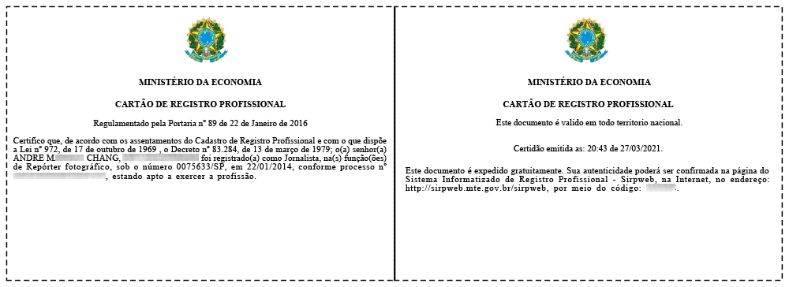
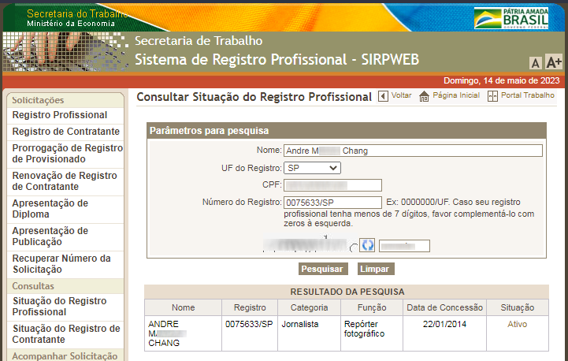

首頁
關於我
出生於巴西，在多元文化環境中成長。
專業證照
由巴西勞動和就業部 (Ministério do Trabalho e Emprego, MTE) 的地區勞動和就業監督局 (Superintendência Regional do Trabalho e Emprego, SRTE) "登記為記者，任攝影報導者"。
專業登記卡

專業註冊登記號碼 0075633/SP
職業注冊系統

專業登記卡中資料的真實性可在職業注冊系統(巴西經濟部勞動秘書處 / Secretaria do Trabalho, Ministério da Economia)，內做確認，如有必要。驗證: 14.05.2023。
專業協會
04.2017 ~ 04.2016
02.2016 ~ 02.2015
01.2015 ~ 01.2014
ARFOC-SP，聖保羅，巴西
聖保羅州攝影和錄影記者協會 (Associação de Repórteres Fotográficos e Cinematográficos no Estado de São Paulo) 會員。
語言
第一，母語:
葡萄牙語
台語(臺灣閩南語)
西班牙語
國語
第二:
英語
教育 / 課程
2024/23 |
法新社 新聞與數位調查技能課程
2006 | 畢業於工業設計副學士學位
2006 | 數位攝影 + 創意閃光
2000 | HTML (超文本標記語言)
1999 | 個人電腦硬體技術員
1999 | Windows NT 4.0
1999 | Visual FoxPro 6.0
1998/97 | 國語
1997/94/93 | 英語
等等。
多元文化
第三文化兒童/人: "世界公民"